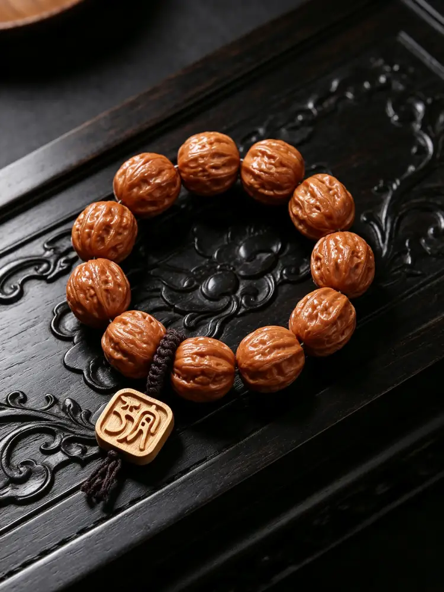
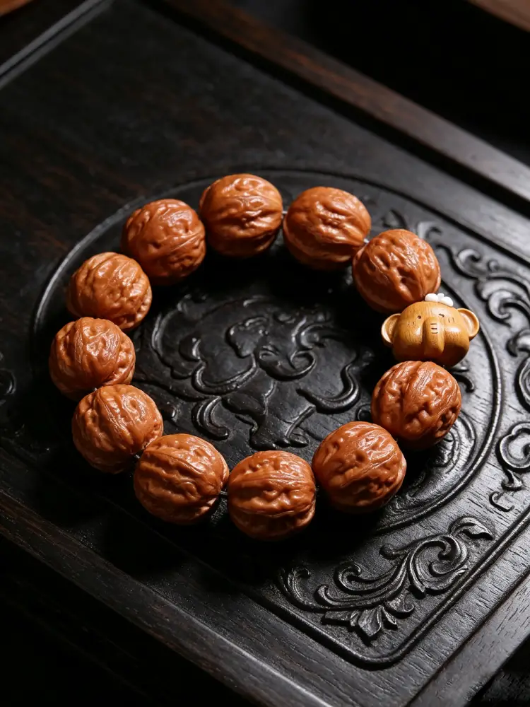
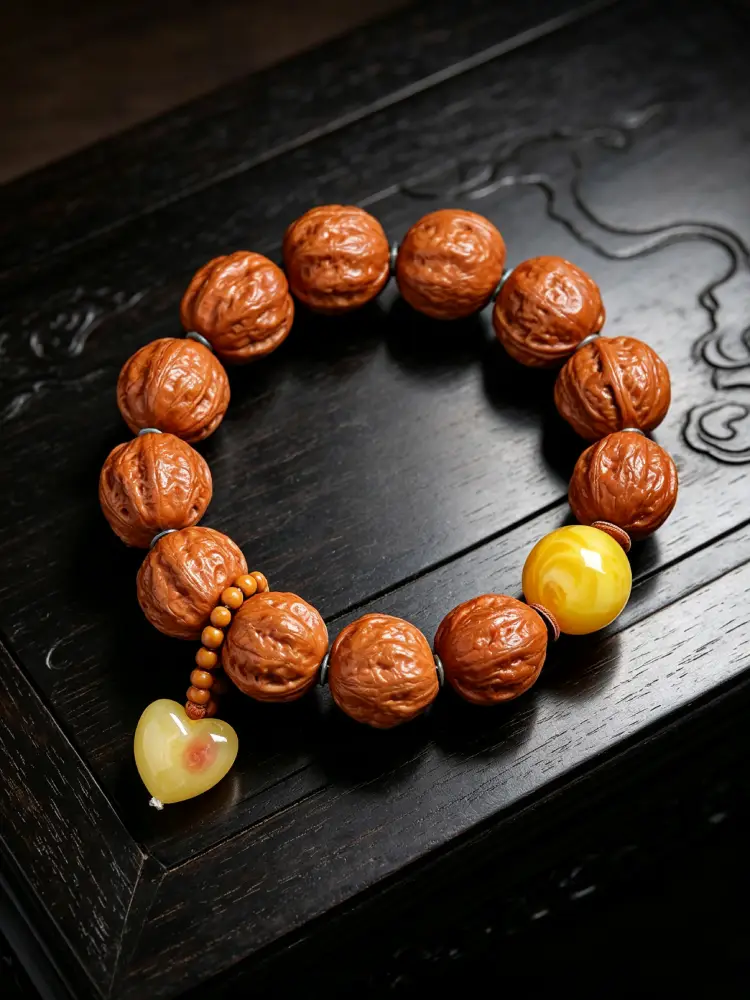
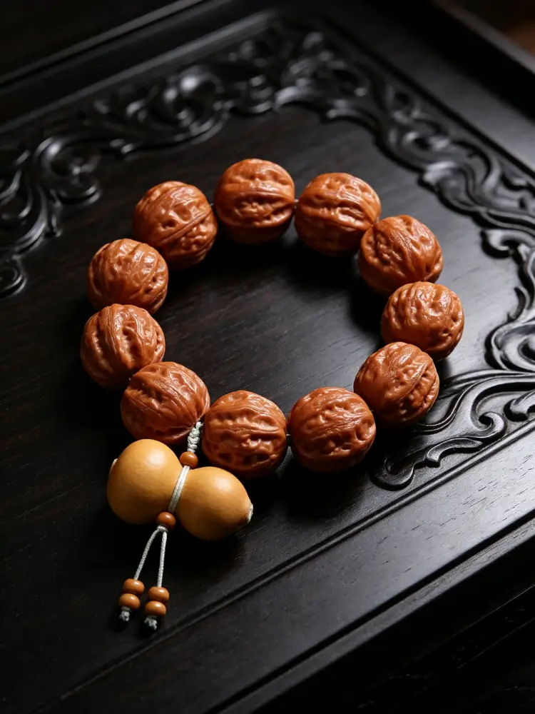
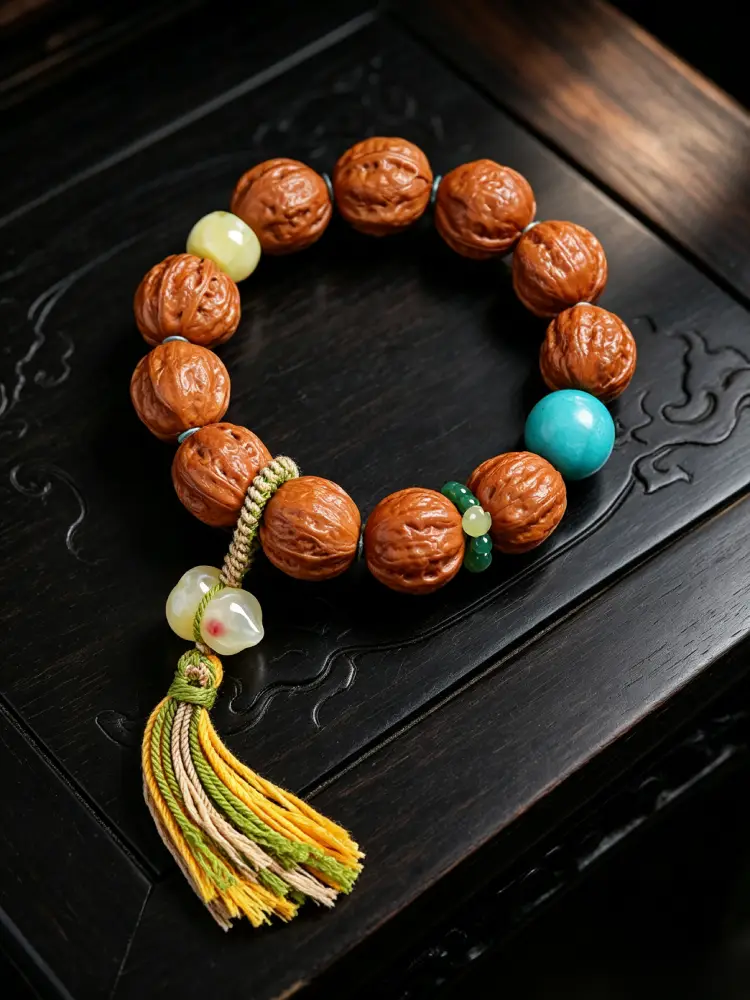

В мире китайских традиционных украшений многие впервые знакомятся с экзотическими браслетами из семян бодхи из других культур. Но мало кто знает, что браслет из орехов цицзы является истинно китайским сокровищем — традицией даосских чёток для медитации, уходящей корнями в эту землю более тысячи лет, без какого-либо влияния иностранных культур. Сделанные целиком из диких орехов, найденных в глубине северных гор Китая, древние собирали эти природные орехи и полировали их в браслеты, вкладывая в них философию, мудрость и благоприятные пожелания. Их сдержанный, созерцательный восточный характер особенно любим зарубежными поклонниками китайской культуры.
Задолго до того, как буддийские чётки попали в Китай, даосские практикующие уже имели традицию «текущих чёток» (Лючжу), о чём свидетельствует даосский канон «Тайсюань Цзинь Со Лю Чжу Инь». Древние даосские отшельники и учёные, жившие в горах, не нуждались в путешествиях в далёкие страны за экзотическими семенами — они просто собирали естественно созревшие орехи цицзы в лесах вокруг себя, очищали и полировали их в браслеты, используя их для ежедневной медитации и тихого созерцания.
Рождённые в горах, переживающие смену сезонов, солнце, ветер и дождь, эти орехи несут естественную энергию дикой природы. Древние верили, что хранение предметов из природы близко к телу — это способ жить в гармонии с сезонами и самой природой — самое простое выражение восточной философии «единства неба и человека».
1. Гребни и долины: принятие взлётов и падений жизни
Каждый орех цицзы покрыт естественным неровным рисунком — нет двух одинаковых, как нет двух одинаковых жизненных путей. Гребни и впадины ореха соответствуют гладким моментам жизни и трудным периодам: не нужно сопротивляться неизбежным поворотам судьбы. Каждый опыт, как и рисунок ореха, становится вашим уникальным знаком. Медленное растирание и полировка впадин с течением времени — это также способ примирения с несовершенствами жизни и принятия полноты человеческого опыта.
2. Становление глаже с течением времени: терпение приносит тепло
Новый браслет из орехов цицзы на ощупь грубоват и сух. Но с терпеливым ежедневным ношением — пальцы нежно растирают поверхность в течение месяцев и лет — он постепенно приобретает богатую патину и превращается в тёплый, полупрозрачный янтарный блеск. Это точно отражает восточную философию: только через течение времени, постоянную отшлифовку характера и избавление от шероховатостей и острых углов человек может стать мягким, мудрым и тихо уравновешенным. Жизненный опыт никогда не является бременем — он является источником внутреннего тепла и благодати.
3. Естественная круглая форма: философия «круглого снаружи, квадратного внутри»
Естественная круглая форма ореха цицзы несёт классический восточный принцип «круглый снаружи, квадратный внутри»: сохранять твёрдые принципы и целостность внутри (твёрдое ядро), будучи мягким и гармоничным в общении с другими (гладкая, округлая внешность). Не громкий и не резкий, человек идёт по жизни с ясностью и грацией, не теряя своего истинного «я».

1. «Хэ» (Гармония): мир в семье и собирание удачи
В китайской культуре слово «орех» (хэ) созвучно слову «гармония» (хэ). Это подразумевает семейное единство, гармоничные отношения и идеальное согласие всех вещей — а также собирание удачи со всех сторон. Ежедневное ношение приносит гладкое плавание и счастливые встречи.
2. Богатые ядра: доброе сердце и долговременные благословения
Полное, твёрдое ядро ореха олицетворяет «человеколюбие» (жэнь) — качество доброты и хорошего сердца. Это символизирует, что, относясь к другим с добротой, можно обрести долговременную удачу. Обилие ядер также означает процветание, изобилие, здоровье из года в год и неуклонно растущее богатство.
3. Рождённый в дикой природе: свобода и естественная удача
В отличие от массово производимых, искусственно вырезанных украшений, орехи цицзы имеют естественную форму в горах, впитывая энергию четырёх сезонов. Древние верили, что предметы, рождённые в дикой природе, несут естественные благословения, которые могут помочь рассеять заботы и несчастья владельца, открывая более расслабленное и позитивное состояние жизни. Это олицетворяет идеал ухода от шума и тревог современной жизни, возвращение к простоте при постоянном получении благословений природы.
4. Даосские чётки для медитации: успокоение ума и привлечение удачи
В тихие моменты медленное перебирание каждой бусины кончиками пальцев создаёт успокаивающий ритм, который успокаивает ум и снимает стресс и тревогу. Древние использовали эту практику для успокоения ума и поиска прозрения — а когда сердце спокойно, удача приходит естественно. С течением времени преобразование патины браслета также несёт красивое значение «горечь уступает место сладости» — постепенный поворот удачи к лучшему и приход лучших дней.
5. Твёрдая скорлупа: защита, безопасность и отведение препятствий
Твёрдая толстая скорлупа ореха издавна считалась естественным защитным талисманом, символизирующим безопасность и гладкие путешествия в повседневной жизни. Считается, что она помогает владельцу отражать неожиданные трудности и сохранять уже имеющиеся удачу и богатство, неуклонно приветствуя новые возможности и благословения.

Браслет на фото дополнен такими аксессуарами, как янтарь, тыква-горлянка и подвеска из нефрита в форме сердца — каждый добавляет своё особое благословение:
Тыква-горлянка: Слово «тыква» (ху) созвучно «удаче» (фу) и «процветанию» (лу), добавляя дополнительный слой благословений на удачу и жизнь без забот.
Тёплые янтарные бусины: Тёплый, светящийся янтарь символизирует тепло, здоровье и позитивные отношения — улучшая социальные связи и привлекательность.
Подвеска из нефрита в форме сердца: Олицетворяет мирное сердце и постоянное присутствие радости — встречая каждое благословение с спокойным и открытым умом.
Вместе эти элементы создают красиво сбалансированную композицию — деревенские горные орехи в сочетании с тёплыми полированными украшениями, простые, но изысканные, сдержанные и элегантные для повседневного ношения, каждый слой добавляет новые благословения и добрые пожелания.

Браслет из ореха с подвеской «Мир»

Браслет из ореха с янтарной бусиной-черепашкой

Браслет из ореха с деревянным талисманом-слоном

Браслет из ореха с подвеской из янтаря в форме сердца

Браслет из ореха с подвеской-тыквой-горлянкой

Браслет из ореха с кисточкой и полудрагоценными камнями